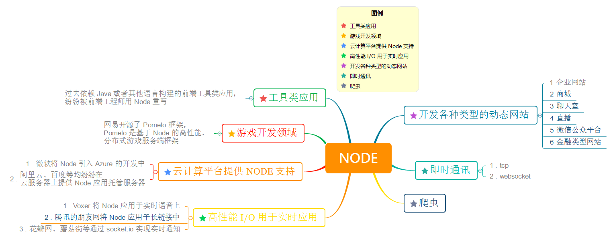
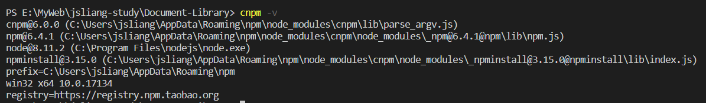

Node
Create by jsliang on 2018-11-22 08:21:23
Recently revised in 2019-05-24 16:33:34
一 Node 目录
| 目录 |
|---|
| Node 基础 |
| Koa 框架 |
二 Node 介绍
- 什么是 Node.js？
Node.js 是一个 JavaScript 运行环境(runtime)。它让 JavaScript 可以开发后端程序，实现几乎其他后端语言实现的所有功能。传说中 能与 PHP、JSP、Python、Ruby 等后端语言平起平坐。但是，实际上 Node 一般用作中间件。例如：在浏览器端和 Java 端使用 Node 作为中间件，Node 调用 Java 后端发布的接口，同时 Node 可以发布 HTTP 接口给浏览器端调用。
参考链接：浅谈前后端分离与实践之 nodejs 中间层服务(二) | 知乎
Node 优点？
Node 语法完全是 JS 语法，只要你懂了 JS 基础就可以学会 Node 后端开发。
- Node 超强的高并发能力。在 Java、PHP 或者 .Net 等服务端语言中，会为每一个客户端的连接创建一个新的线程，而每个线程需要耗费大约 2 MB 内存。也就是说，理论上一个 8GB 的服务器，可以同时连接的最大用户数为 4000 个左右。而 Node 不会为每个客户创建新的线程，仅仅使用一个线程。所以，使用 Node，一个 8GB 的服务器，可以同时处理超过 4 万用户的连接。
- 实现高性能服务器。Node 基于 V8 引擎，V8 引擎是 Google 公司使用 C++ 开发的一种高性能引擎。这意味着开发者编写的高端 JavaScript 脚本代码与开发者编写的低端的 C 语言具有非常相近的执行效率。
开发周期短、开发成本低、学习成本低。花最小的硬件成本，追求更高的并发，更高的处理性能。
Node 应用？

三 编程开发环境
Node 系列教程文章中，需要的前置知识为：Node、npm、cnpm、Visio Studio Code。
下面是这些技术的详细介绍：
- No.1 Node.js
在开发学习中，我们需要安装配置 Node 的环境。
首先，我们需要先下载 Node 并安装到我们的电脑上。
然后，我们需要了解 Node 与 NPM 之间的关系。
最后，由于 npm 在国内有一定限制，所以，我们需要换成淘宝的 npm 镜像：cnpm，从而提高我们的 npm 包的下载安装速度。
个中繁杂，由于系统还要考虑 Win、Mac 等缘故，这里不一一累述，请小伙伴们按照下面的链接先行安装 Node，不明之处可去百度或者 Google。
最后的最后，如果小伙伴们觉得环境装好了，请输入 cnpm -v 查看自己的版本，jsliang 的 Node、Npm、Cnpm 版本如下。

- NO 2 Visio Studio Code
如果你是个前端开发，那么 Visio Studio Code（以下简称 VS Code）一定不能错过，因为这是一款轻量级的代码编辑器，支持语法高亮、智能代码补全、自定义热键、括号匹配、代码片段、代码对比 Diff、GIT 等特性。所以，下个 VS Code 愉快玩耍吧！
四 技术支撑
jsliang 的文档库 由 梁峻荣 采用 知识共享 署名-非商业性使用-相同方式共享 4.0 国际 许可协议进行许可。
基于https://github.om/LiangJunrong/document-library上的作品创作。
本许可协议授权之外的使用权限可以从 https://creativecommons.org/licenses/by-nc-sa/2.5/cn/ 处获得。